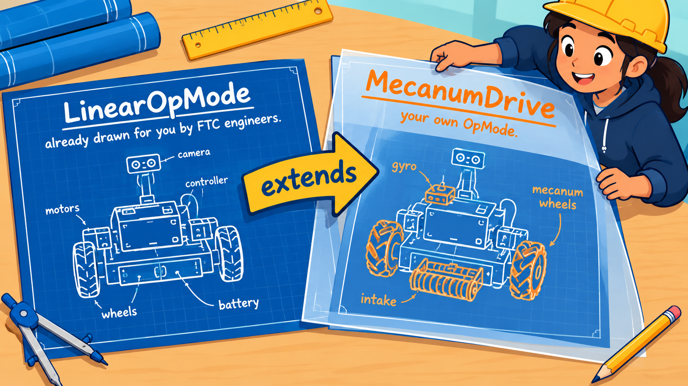
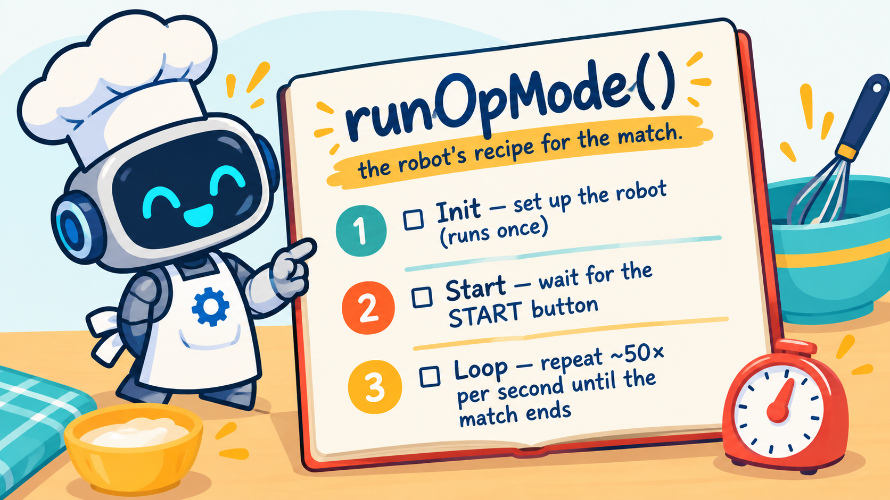

Before you write anything, let's look at what you already have. Open the Pit code editor and look at the file tabs across the top. Right now there is just one file — and that is on purpose. As you finish lessons, new files will appear one at a time, each adding one new piece of the robot. Starting with a single small file keeps things clear.
▸ Open MecanumDrive.javaThis file is an OpMode — a program the robot can run. Let's read it from the very top down, one piece at a time. After each part below, click the link to jump straight to that line in the code.
The very first line, package org.firstinspires.ftc.teamcode;, says which folder this
file lives in. Every file in your robot's code shares that same package, so they can all find and use
each other. You'll see that identical line at the top of every file you add.
Next come the imports. Java, and the FTC robot library, come with mountains of
ready-made code. An import line is how your file says “I want to use this tool by
name.” For example, import ...opmode.LinearOpMode; pulls in the LinearOpMode
tool your program is built on, and ...opmode.TeleOp; pulls in the @TeleOp label on
the next line. Without the import, Java wouldn't know what those names mean. Each time you add a new feature
in later lessons — motors, the gyro, and more — you'll add one more import for the tool it needs.
Then the @TeleOp label. This line is a tag stuck onto your program. The
name inside it is exactly what you'll pick from the menu on the Driver Hub. The word
TeleOp means “tele-operated”: a human drives it with the gamepad (as opposed to an
autonomous program that drives itself).
The line public class MecanumDrive extends LinearOpMode begins the class.
A class is a blueprint — a plan that describes what something is and what it can do.
LinearOpMode is a blueprint the FTC engineers already drew for you: a plain robot program
that already knows the essential-but-boring stuff, like how to talk to the Driver Hub and how to wait for
the START button. Writing extends LinearOpMode means “start from their blueprint, then
add my own parts.” You get all of their work for free and only have to draw the pieces that make
this OpMode yours.

extends LinearOpMode means you start from
FTC's ready-made blueprint and add only your own parts on top.Inside the class, find the method called runOpMode(). A method is a named
set of steps you can run whenever you call its name — just like a recipe in a cookbook. You
write the steps once, give them a name, and after that the whole set of steps runs anytime that name is
“called.” runOpMode() is the robot's recipe for the entire match: when you press
START, the robot controller calls runOpMode() and the robot follows the steps you wrote
inside. Bundling steps under one name keeps your program organized and lets you reuse it.

runOpMode() holds the robot's steps
for the match — and it always has the same three parts below.Every runOpMode() has the same three parts. Read each one, then jump to it:
1. Init — runs once, right after you press the INIT button. This is where setup goes. Ours just shows a message so the driver knows the robot is ready.
▸ MecanumDrive.java : INIT2. Start — waitForStart() pauses the program right here until the driver
presses the play button. Nothing past this line happens until the match begins.
3. The run loop — the while (opModeIsActive()) block repeats about
fifty times every second until the match ends. This is where you'll spend almost all of your
time in later lessons: reading the gamepad, driving, and showing information. Right now it does nothing
but wait.
MecanumDrive.java and read it top to bottom with the links above.That's your whole starting point: a package line, a few imports, one class built on
LinearOpMode, and a runOpMode() recipe with an init and a loop. In the next lesson
you'll make it actually say something while it runs.